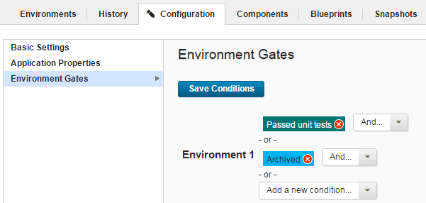

Environment gates
An environment gate is a requirement that must be met before component versions can be deployed to an environment. For example, a component version might need to pass certain tests or receive an approval.
Each environment gate has a target component version status. When the component version has that status, it can be deployed to the environment. The gate can also have a more complex set of statuses, using "and" and "or" conditions.
For example, the following figure shows the gate for an environment. The gate has two component version statuses, which are connected with an "or" condition. In this case, a component version can not be deployed to the environment unless the component version has one or both of the statuses.

To see the statuses on a component version, click Components > selected component > Versions and look in the Latest Status field.
Parent topic: Creating environment gates